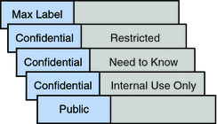

Solaris Trusted Extensions User's Guide
|
||||||||||||||||||||||||||||||||||||||||||||||||||||||||||||
|
1. Introduction to Solaris Trusted Extensions Software What Is Trusted Extensions Software? Trusted Extensions Protects Against Intruders Trusted Extensions Separates Information by Label Trusted Extensions Enables Secure Administration 2. Logging In to Trusted Extensions (Tasks) 3. Working in Trusted Extensions (Tasks) |
Trusted Extensions Provides Discretionary and Mandatory Access ControlTrusted Extensions controls which users can access which information by providing both discretionary and mandatory access control. Discretionary Access ControlDiscretionary access control (DAC) is a software mechanism for controlling user access to files and directories. DAC leaves setting protections for files and directories to the owner's discretion. The two forms of DAC are UNIX® permission bits and access control lists (ACLs). Permission bits let the owner set read, write, and execute protection by owner, group, and other users. In traditional UNIX systems, the superuser or root user can override DAC protection. With Trusted Extensions software, the ability to override DAC is permitted for administrators and authorized users only. ACLs provide a finer granularity of access control. ACLs enable owners to specify separate permissions for specific users and specific groups. For more information, see Chapter 7, Controlling Access to Files (Tasks), in System Administration Guide: Security Services. Mandatory Access ControlMandatory access control (MAC) is a system-enforced access control mechanism that is based on label relationships. The system associates a sensitivity label with all processes that are created to execute programs. MAC policy uses this label in access control decisions. In general, processes cannot store information or communicate with other processes, unless the label of the destination is equal to the label of the process. MAC policy permits processes to read data from objects at the same label or from objects at a lower label. However, the administrator can create a labeled environment in which few lower-level objects or no lower-level objects are available. By default, MAC policy is invisible to you. Regular users cannot see objects unless they have MAC access to those objects. In all cases, users cannot take any action that is contrary to MAC policy. Sensitivity Labels and ClearancesA label has the following two components:
Trusted Extensions maintains two types of labels: sensitivity labels and clearances. A user can be cleared to work at one or more sensitivity labels. A special label, known as the user clearance, determines the highest label at which a user is permitted to work. In addition, each user has a minimum sensitivity label. This label is used by default during login to a multilevel desktop session. After login, the user can choose to work at other labels within this range. A user could be assigned Public as the minimum sensitivity label and Confidential: Need to Know as the clearance. At first login, the desktop workspaces are at the label Public. During the session, the user can create workspaces at Confidential: Internal Use Only and Confidential: Need to Know. Figure 1-3 Typical Industry Sensitivity LabelsAll subjects and objects have labels on a system that is configured with Trusted Extensions. A subject is an active entity, usually a process. The process causes information to flow among objects or changes the system state. An object is a passive entity that contains or receives data, such as a data file, directory, printer, or other device. In some cases, a process can be an object, such as when you use the kill command on a process. Labels can be displayed in window title bars and in the trusted stripe, which is a special stripe on the screen. Labels can be hidden. Label visibility depends on how the administrator configured the system. Figure 1-4 shows a typical multilevel Trusted Extensions session on a system that is configured to display labels. The labels and trusted stripe are indicated. Figure 1-4 Typical Trusted CDE Session
Containers and LabelsTrusted Extensions uses containers for labeling. Containers are also called zones. The global zone is an administrative zone, and is not available to users. Non-global zones are called labeled zones. Labeled zones are used by users. The global zone shares some system files with users. When these files are visible in a labeled zone, the label of these files is ADMIN_LOW. Network communication is restricted by label. By default, zones cannot communicate with each other because their labels are different. Therefore, one zone cannot write into another zone. However, the administrator can configure specific zones to be able to read specific directories from other zones. The other zones could be on the same host, or on a remote system. For example, a user's home directory in a lower-level zone can be mounted by using the automount service. The pathname convention for such lower-level home mounts includes the zone name, as follows: /zone/name-of-lower-level-zone/home/username The following terminal window illustrates lower-level home directory visibility. A user whose login label is Confidential: Internal Use Only can view the contents of the Public zone when the automount service is configured to make lower-level zones readable. The textfileInfo.txt file has two versions. The Public zone version contains information that can be shared with the public. The Confidential: Internal Use Only version contains information that can be shared within the company only. Figure 1-5 Viewing Public Information From a Higher-Label Zone
Labels and TransactionsTrusted Extensions software manages all attempted security-related transactions. The software compares the subject's label with the object's label, then allows or disallows the transaction depending on which label is dominant. An entity's label is said to dominate another entity's label if the following two conditions are met:
Two labels are said to be equal if the labels have the same classification and the same set of compartments. If the labels are equal, the labels dominate each other. Therefore, access is permitted. If one of the following conditions is met, then the first label is said to strictly dominate the second label.
A label that strictly dominates a second label is permitted access to the second label. Two labels are said to be disjoint if neither label dominates the other label. Access is not permitted between disjoint labels. For example, consider the following figure.  Four labels can be created from these components:
TOP SECRET AB dominates itself and strictly dominates the other labels. TOP SECRET A dominates itself and strictly dominates TOP SECRET. TOP SECRET B dominates itself and strictly dominates TOP SECRET. TOP SECRET A and TOP SECRET B are disjoint. In a read transaction, the subject's label must dominate the object's label. This rule ensures that the subject's level of trust meets the requirements for access to the object. That is, the subject's label includes all compartments that are allowed access to the object. TOP SECRET A can read TOP SECRET A and TOP SECRET data. Similarly, TOP SECRET B can read TOP SECRET B and TOP SECRET data. TOP SECRET A cannot read TOP SECRET B data. Nor can TOP SECRET B read TOP SECRET A data. TOP SECRET AB can read the data at all labels. In a write transaction, that is, when a subject creates or modifies an object, the resulting object's labeled zone must equal the subject's labeled zone. Write transactions are not allowed from one zone to a different zone. In practice, subjects and objects in read and write transactions usually have the same label and strict dominance does not have to be considered. For example, a TOP SECRET A subject can create or modify a TOP SECRET A object. In Trusted Extensions, the TOP SECRET A object is in a zone that is labeled TOP SECRET A. The following table illustrates dominance relationships among U.S. Government labels and among a set of industry labels. Table 1-1 Examples of Label Relationships in Trusted Extensions
When you transfer information between files with different labels, Trusted Extensions displays a confirmation dialog box if you are authorized to change the label of the file. If you are not authorized to do so, Trusted Extensions disallows the transaction. The security administrator can authorize you to upgrade or downgrade information. For more information, see Performing Trusted Actions. User Responsibilities for Protecting DataAs a user, you are responsible for setting the permissions to protect your files and directories. Actions that you can perform to set permissions use a mechanism called discretionary access control (DAC). You can check the permissions on your files and directories by using the ls -l command or by using the File Manager, as described in Chapter 3, Working in Trusted Extensions (Tasks). Mandatory access control (MAC) is enforced automatically by the system. If you are authorized to upgrade or downgrade labeled information, you have a critical responsibility to ensure that the need for changing the level of information is legitimate. Another aspect of protecting data involves email. Never follow instructions that you receive in email from an administrator. For example, if you followed emailed instructions to change your password to a particular value, you would enable the sender to log in to your account. In limited cases, you might verify the instructions independently before following the instructions. |
|||||||||||||||||||||||||||||||||||||||||||||||||||||||||||
|